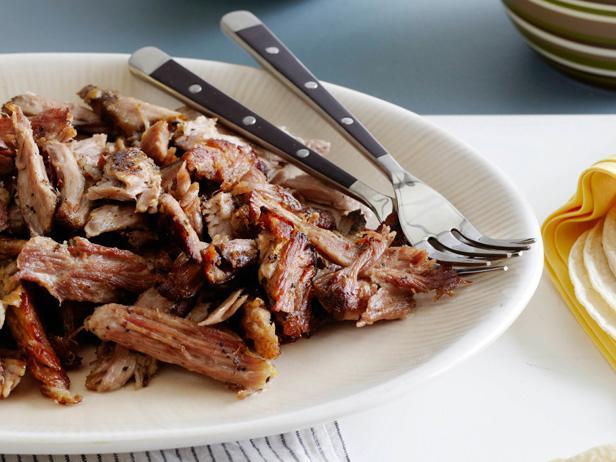

Pressure Cooker Carnitas

Description
Every tortilla dreams of being stuffed with Carnitas. The best of the best of Mexican food, seasoned pork is slow
cooked until tender before gently teasing apart with forks and pan frying to golden, crispy perfection
It's traditionally made with pork shoulder (also known as pork butt) because of the higher fat content, which
helps the meat stay super tender and juicy while it's cooked.
Ingredients
- 1 (6 pound) pork butt roast
- 1 ½ tablespoons salt
- 1 tablespoon dried oregano
- 2 teaspoons ground cumin
- 1 teaspoon ground black pepper
- ½ teaspoon chile powder
- ½ teaspoon paprika
- 2 tablespoons olive oil, or more to taste
- 1 cup orange juice
- 1 onion, coarsely chopped
- 4 cloves garlic, diced, or more to taste
Steps
- Trim excess fat from pork butt; cut pork into 2-inch cubes and transfer to a bowl.
- Combine salt, oregano, cumin, black pepper, chile powder, and paprika together in a bowl. Rub pork cubes
with spice mixture. Coat seasoned pork cubes lightly in olive oil; place in pressure cooker. Cover pork
cubes with orange juice, onion, and garlic.
- Place lid on pressure cooker and lock; bring to full pressure over medium heat until pork is no longer pink
in the center, about 60 minutes. Let pressure come down naturally, about 15 minutes.
- Remove pork from pressure cooker and shred meat.